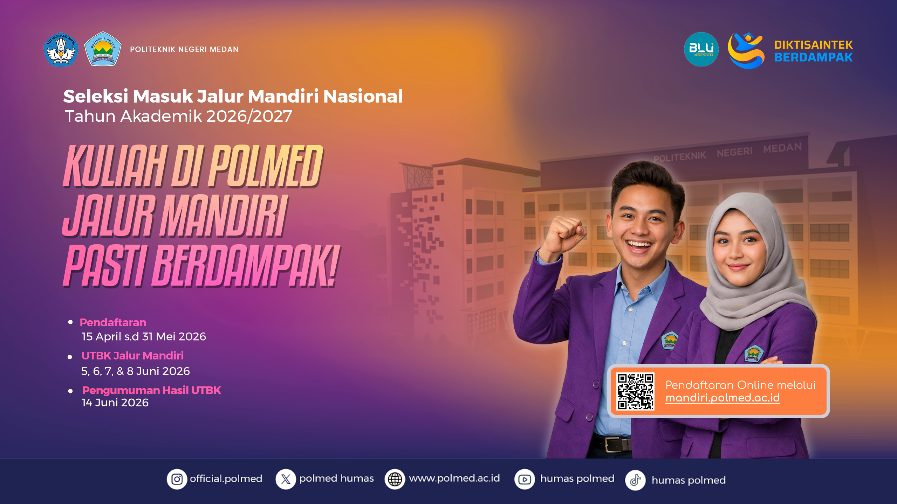

Portal Information Resmi Komunitas Akademik Politeknik Negeri Medan

Politeknik Negeri Medan kembali membuka kesempatan emas bagi lulusan SMA/SMK sederajat melalui Jalur Mandiri Nasional. Pendaftaran dibuka serentak untuk menjaring talenta vokasi berkualitas yang siap terjun ke industri kerja.